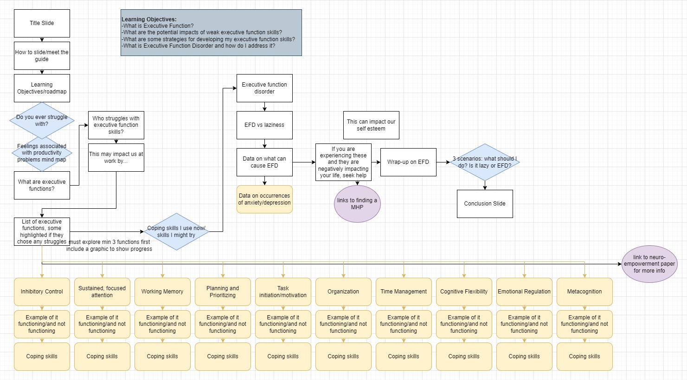

A Guide to Getting Things Done
A guided and personalized exploration of Executive Function Skills where you will learn how to help your brain get out of its own way, complete tasks, and accomplish your goalsOverview
Audience:
- Young employees who are still developing their executive function skills
- Older employees experiencing a decline in executive function
- Managers and employers interested in improving their employees' performance in an informed, holistic way.
Responsibilities: Research, Instructional Design, Storyboarding, Prototyping, Scripting, Voice Acting, Visual Design, eLearning Development, Logic Design
Softwares Used: Articulate Storyline, Adobe Photoshop, Adobe Illustrator, Adobe Premiere Pro, Audacity, Google Suite
The Problem
The Covid-19 pandemic caused a worldwide sense of uncertainty and struggle. Like many, I grappled with the pervasive issues of brain fog and diminished productivity. Daily tasks were a source of anxiety and frustration as even the most mundane seemed daunting. During a session of mindless scrolling (a maladaptive coping strategy I and many others have fallen into), I stumbled upon an infographic about Executive Dysfunction. It was a concept I had never heard of, but described many of the feelings and challenges I was dealing with. This sense of recognition prompted me to pursue deeper research into the topic of executive functions and their impact on various aspects of life.
To my surprise, conversations with colleagues and friends revealed a widespread lack of awareness about executive functions, as well as shared feelings of guilt and self-recrimination. I was driven to make a difference. I created this project to share the valuable information on executive function and effective coping strategies I had acquired through my research.
The Plan
Through my interview process, I identified four critical issues that became my key learning objectives.
While these learning objectives were widely applicable, I recognized early on that addressing executive function comprehensively would be overly ambitious. Consequently, I decided to narrow my focus to the specific intersection of executive functions with the workplace and professional performance. I made this choice with the intention to structure the learning experience to mimic corporate training, aiming for a more extensive and impactful reach than a more casual lesson design.
The Goal
Through active engagement with the lesson, individuals will acquire a nuanced understanding of "laziness" and learn to differentiate it from natural, manageable features of the brain. The lesson aims to empower users by equipping them with a practical toolkit of actionable steps to address executive function challenges. Users will also develop a language set that enables them to better articulate their experiences and will be directed toward additional resources for deeper understanding. Finally, the lesson covers warning signs of executive dysfunction, ensuring that users are informed about when to seek help and providing guidance on the appropriate channels for assistance.
Planning and Design
Research
When I began this project, I saw it as a valuable opportunity to enhance my personal knowledge of executive functions in order to improve my own efficacy. Yet, as my research unfolded, I recognized the potential to create a more inclusive resource. Delving into all major executive functions, I drew from diverse sources on topics spanning adult and childhood education, ADHD, speech pathology, and psychology. My goal was to present a well-rounded perspective, and for those interested in delving into the sources I consulted, the complete works cited is available within the project.
Design Considerations
In tailoring the lesson for professionals, I employed professional language, designed mature and respectful knowledge checks, and maintained a modern, cohesive aesthetic. Even within the narrowed scope of the professional environment, the depth of information to cover was substantial. To facilitate ease of understanding and navigation, I structured the lesson into manageable chunks, enabling users to navigate it at their own pace. Recognizing the need for portability, I opted for an mLearning (mobile eLearning) format, specifically optimized for engagement on tablet devices.
Lesson Flowchart

The first step in my process was the breakdown of my learning objectives into distinct slides. For this, I used draw.io, an online, cloud-enabled flowchart software. This allowed for a systematic mapping of the entire lesson structure, granting the flexibility to add, consolidate, or rearrange sections as needed. The tool also makes it easy to visualize the connections between slides to better map out the user experience and identify and eliminate superfluous information, resulting in a more refined product.
Written Storyboard
Given the substantial amount of information that needed to be conveyed, I chose to include a voiceover to avoid overloading the screen with text. This decision entailed the dual task of scripting for the voiceover alongside the on-screen text. Furthermore, to elevate the learning experience, I prioritized incorporating engaging user interaction, which I first planned, in detail, in the storyboard.
Look Development
My focus while crafting the visual design was on cultivating a feeling of calm introspection. To achieve this, I centered the look development on a modern, meditative, almost spa-like aesthetic. Recognizing that users would spend a significant amount of time on each slide, often at least 15 seconds, I strategically incorporated subtly moving background elements. This intentional design feature serves to sustain user attention while minimizing visual fatigue, contributing to a serene and immersive learning atmosphere.
Implementation
Prototype
I started the implementation process with the creation of a brief yet comprehensive prototype comprising four slides, each with unique functions to showcase the overall breadth of the design. Following the valuable insights I received as feedback, I made iterative changes to refine the prototype. Equipped with this firm foundation, I moved on to full-scale development.
Features

Custom Animations: While the majority of slides maintain a sleek and unobtrusive visual aesthetic with subtle animations and transitions, some slides feature more elaborate animations strategically implemented to inject dynamism and retain user engagement. A standout example is the blooming animation applied to the list illustrating common ways we use executive functions at work. Initially a mundane text list, I reimagined it with a more creative transition that harmonizes with the contemporary plant theme. This transformation involved the creation of custom leaf shapes using the curve tool, the application of the 'grow and spin' animation, and the strategic use of groups to manipulate the animation's pivot point.
Multiple Learning Modalities: I am committed to inclusive design, and so I crafted the presentation to accommodate multiple learning modalities. The integration of on-screen text and a well-crafted voiceover effectively engages both auditory and visual learning preferences. To enhance accessibility, I included features like closed captioning and large-scale text.
Personalized Content: The learning experience provides information on all executive functions, but it starts with a quiz to establish a personal connection by highlighting specific areas of interest for individual users.
Self-Guided Learning: The user is empowered to choose their own path of interest, receiving guidance tailored to their self-reported areas for growth.
Varied Interactivity: To preserve the flow and pace of the experience, interactions were intentionally kept simple, avoiding any distraction or slowdown. Despite their simplicity, these interactions are diversified to ensure the retention of the user's attention and interest.
Testing and Reflection
My network provided positive feedback, expressing a particular liking for the voiceover as it aided their focus. They appreciated the professional and polished look and feel of the presentation. Additionally, they found the information presented to be useful, with several noting insights into their own behavior.
In addition to the positive feedback, I also received valuable critiques. My contacts identified a number of bugs and typos I promptly addressed. Some participants expressed concerns about the length, finding it challenging to focus.
Future Improvements
If I had more time and resources to enhance this project, there are a few issues I would address. One unresolved bug involves users accidentally clicking the pause button on the timeline, resulting in the project appearing frozen. I would invest more time in playtesting to explore potential solutions. While my amateur voiceover is serviceable, especially considering the limitations of my equipment and my lack of experience as a voice actor, it would enhance the overall experience to replace it with a higher-quality voiceover. Despite my efforts to narrow the scope of the material, the amount of information to cover remains substantial. Ideally, I would prefer to divide this into multiple shorter trainings, making them more approachable and facilitating easier navigation as a resource for returning users.